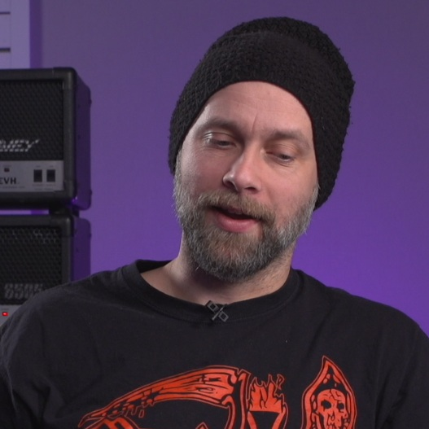

Chapter 5: The Naturalistic Approach
Organic heaviness: performance capture, dynamics, and human feel.
Navigate Chapters
The naturalistic approach to metal production is one of the two primary philosophical frameworks we identified. Championed most explicitly by Mike Exeter and Fredrik Nordström, and to some extent Andrew Scheps, this school prioritizes capturing and preserving the organic interaction between musicians, even when using modern production tools. This philosophy has deep roots in traditional rock and metal production, dating back to the formative recordings that established the genre's sonic foundation.
Historical Context and Evolution
The naturalistic approach emerged during metal's formative years (early 1970s) when technological limitations necessitated capturing bands performing together with minimal editing possibilities. Albums like Black Sabbath's early recordings engineered by Rodger Bain exemplify this approach, where heaviness derived primarily from the band's raw power rather than production enhancement. Mike Exeter, who later worked with Black Sabbath, carries this legacy forward while integrating modern techniques.
'If everything is super tight, super synced, it's not going to be heavy', explains Fredrik Nordström, articulating the core philosophy. 'You need to have some errors in there. Human feel'. This perspective values the subtle timing discrepancies and performance variations that occur when musicians interact, what Exeter describes as the 'ensemble feel'. Naturalistic producers consider these essential components of a convincing heavy sound rather than mere imperfections to be corrected.
Technical Implementation
While grounded in traditional values, the naturalistic approach has developed considerably with technology. Modern proponents like Exeter and Nordström do not reject contemporary tools, they simply employ them with restraint and purpose. Key characteristics of their technical implementation include:
- Selective Sample Reinforcement: Unlike the sample-replacement approach that hyperreal producers favour, naturalistic mixing typically employs samples selectively to support rather than replace the original performance. Nordström's technique exemplifies this philosophy where he added samples under the real tom hits to bring out the finer details in the fills. This maintains the original toms' character and resonance while ensuring clarity and impact.
- Minimalist Signal chains: Exeter demonstrated remarkable restraint in his approach to the 'In Solitude' mix, choosing not to compress1 the kick or snare drum at all because he believed it would not improve them. His bass guitar chain similarly had no EQ2 or compression; instead, he employed fader automation to manage dynamics while preserving the natural tone. This approach requires advanced critical listening skills and confidence in the source material.
- Dynamic Preservation: While later sections will explore specific implementation techniques in detail, the naturalistic philosophy generally preserves more of the original dynamic range through careful automation3 or parallel processing4 rather than aggressive compression. This preserves the emotional impact of dynamic shifts within the composition.
- Performance-Focused Editing: Though not opposed to editing, naturalistic producers approach it differently. When Exeter found the original tom recordings unsuitable, he spent considerable time programming Superior Drummer with subtle timing and velocity variations5 to maintain a convincing performance feel, rather than simply replacing them with mechanical samples. The goal was to make edited elements sound natural and improve the clarity of the performance, not making them perfect.
- Three-Dimensional Soundstage: Naturalistic mixing often creates a more three-dimensional sound field where instruments occupy distinct spaces, including the depth plane (foreground and background). This approach gives the listener a sense of being in the room with the band, as opposed to being confronted by a single sonic mass "in your face". This spatial approach will be explored further in Chapter 10, but it represents a fundamental difference in how naturalistic producers conceptualize the relationship between listener and performance.
Effectiveness and Application
The research demonstrated that naturalistic approaches produce heavy results despite (or perhaps because of) their restrained application of technology. When compared with hyperreal mixes of 'In Solitude', the naturalistic versions displayed several notable characteristics:
- Greater dynamic range between song sections;
- Heightened contrast between verse and chorus impact;
- A more "live" and organic impression.
This approach is particularly effective in styles like traditional heavy metal, doom, stoner metal, and classic death/thrash where the "band in a room" aesthetic remains culturally significant. As Nordström observed regarding Slayer's Reign in Blood, which 'does not sound good sound-wise' in a traditional sense yet conveys aggressive energy, sometimes technical imperfection creates a more energetic form of heaviness.
Challenges and Limitations
The naturalistic approach faces particular challenges in extreme metal subgenres where speed and technical complexity push against human performance capabilities. Techniques like blast beats in subgenres like technical death metal, or sub-bass-rich styles like djent often benefit from more interventionist production techniques. Additionally, the approach requires exceptional performances at the source. As Exeter noted, you should ideally be able to 'broom-handle the mix' (set all faders to equal levels) and have it basically work, which demands impeccable recording balance and performance.
'Production has way less to do with the perception of heaviness than people might think. You could get a heavy song... and shape it in a hundred different ways, and it could still be as heavy'.

The natural approach suggests that heaviness resides primarily in composition and performance, with production serving to enhance rather than create that inherent power. When implemented by skilled engineers, it delivers an engaging heaviness that connects listeners to the human elements behind the music.
While the Naturalistic School maintains connections to metal's organic roots, a contrasting philosophy has emerged alongside technological advancement. The hyperreal approach represents a fundamental reconceptualization of metal production, where engineering precision and mixing sophistication become creative tools in themselves.
'Heaviness doesn't necessarily have to be about sound at all. I guess you can emphasize heaviness with the help of sound'.
Endnotes
- Reduce dynamic range through processing. ↩
- Equalization to adjust frequency response. ↩
- Modifying volume throughout the course of the source material. ↩
- Blending heavily processed signals with original signals. ↩
- Changes in the volume of MIDI notes. ↩